청소년상담사-1급(1교시)(구) (2016-03-26 기출문제)
1과목: 상담사 교육 및 사례지도
1. 상담 기관의 특성을 맥락적 요인으로 포함하고 있는 수퍼비전 모델은?
- 인간중심 모델
- 순환 모델
- 인지행동 모델
- 체계 모델
- 정신분석 모델
(정답률: 알수없음)

2. 수퍼비전에서 발생하는 성 관련 주제에 관한 설명으로 옳지 않은 것은?
- 성 관련 주제 발생을 자연스러운 현상으로 다룬다.
- 수퍼바이저와의 성적 관계에 수련생이 자발적으로 동의한다는 것은 인정하기 어렵다.
- 성 관련 빈정거림, 위협 등 다양한 성희롱이 발생할 수 있다.
- 수련생은 수퍼바이저를 이상화함으로써 성적 매력을 느끼기도 한다.
- 신체적 접촉이 없는 성적 이끌림은 작업동맹을 강화한다.
(정답률: 알수없음)
3. 다음 설명에 해당하는 수퍼바이저의 역할은?
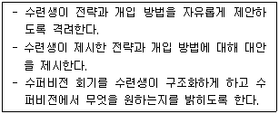
- 교사
- 자문가
- 상담자
- 평가자
- 관리자
(정답률: 알수없음)
4. 진로상담 수퍼비전에 관한 설명으로 적절하지 않은 것은?
- 진로상담 이론을 활용하여 사례를 개념화하도록 지도한다.
- 심리검사 실시 및 해석 실습에 역할극을 활용한다.
- 내담자의 문제를 진로상담과 심리상담으로 이원화하도록 지도한다.
- 수련생의 진로발달에 영향을 미치는 사건이나 심리적 스트레스를 다루기도 한다.
- 내담자의 발달수준과 연령에 적합한 진로 주제를 다루도록 안내한다.
(정답률: 알수없음)
5. 도전과 직면에 관한 설명으로 옳지 않은 것은?
- 도전은 내담자가 변화될 방향을 포함한다.
- 도전은 약점 가운데서 강점을 발견하게 한다.
- 도전은 문제로 인한 내담자의 부차적 이득을 무시한다.
- 직면은 내담자의 모순, 불일치 등에 초점을 맞춘다.
- 직면은 심리구조를 유지하려는 내담자의 노력을 다룬다.
(정답률: 알수없음)
6. 상담자의 소진을 예방할 수 있는 방법으로 옳지 않은 것은?
- 스트레스를 관리한다.
- 소진의 증상과 징후를 안다.
- 상담과 개인적 생활을 분리한다.
- 수퍼비전 등 전문적 지지체계를 만든다.
- 내담자에 대한 열정과 책임감을 다짐한다.
(정답률: 알수없음)
7. 수련생이 수퍼비전에서 경험하는 역할 갈등의 지표가 아닌 것은?
- 내담자에 대한 분노를 자주 표출한다.
- 수퍼바이저에게 지나치게 순응한다.
- 동시에 많은 주제를 다루려 한다.
- 수퍼비전 과정에 대한 불만족을 비꼼으로 표현한다.
- 자존감을 높이기 위해 자신을 과장하거나 합리화한다.
(정답률: 알수없음)
8. 수퍼바이저의 역할에 관한 설명으로 옳지 않은 것은?
- 임상적 기술 및 사례개념화를 가르친다.
- 한 회기에 하나의 역할만 수행한다.
- 수련생의 소진 관리를 돕는다.
- 평가적 피드백을 제공한다.
- 수퍼비전 회기에 대해 문서화한다.
(정답률: 알수없음)
9. 정신분석적 수퍼비전에 관한 설명으로 옳지 않은 것은?
- 수퍼비전 자료의 기저에 있는 내담자와 수련생의 욕구, 기대, 미묘한 교류에 집중하여 진행한다.
- 수련생의 개인적인 문제에 대해서 언급하고 이를 수퍼비전의 주제로 삼는다.
- 수련생은 자신보다는 내담자의 무의식에 관련된 정보공개를 불안해한다.
- 수퍼비전의 초기, 중기, 후기에 따라 초점이 되는 주제가 다르다.
- 수련생은 내담자의 자아강도 및 역동적 이해, 상담 회기를 마친 후 소감을 기술한다.
(정답률: 알수없음)
10. 내담자의 자살행동 평가를 위하여 주목해야 할 위험신호에 해당하는 것을 모두 고른 것은?
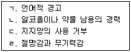
- ㄱ
- ㄴ
- ㄱ, ㄷ
- ㄱ, ㄷ, ㄹ
- ㄱ, ㄴ, ㄷ, ㄹ
(정답률: 알수없음)
11. 다음 상담자의 활동은 무엇인가?
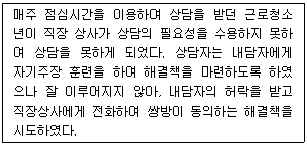
- 연계
- 자문
- 교육
- 옹호
- 치료
(정답률: 알수없음)
12. 수련기관에서 이루어지는 수퍼비전 사전 동의의 장점이 아닌 것은?
- 분명한 구조와 경계를 설정할 수 있다.
- 수퍼비전에 대한 불만족을 줄일 수 있다.
- 수련생과 수퍼바이저 역할이 분명해진다.
- 수퍼비전을 받지 않을 수 있는 자율성이 주어진다.
- 수퍼비전 효과를 평가하는 체계를 마련할 수 있다.
(정답률: 알수없음)
13. 수련생에게 제공하는 형성적 피드백에 관한 내용으로 옳지 않은 것은?
- 공식적이며 사전에 결정되어 있는 평가
- 긍정적인 면과 교정적인 면의 균형
- 집중해야 될 주제의 선택과 구체화
- 잠재적 변화가능성에 초점
- 지속적인 평가체계의 형성
(정답률: 알수없음)
14. 수퍼비전에 관한 설명으로 옳은 것은?
- 수련생의 자기 수퍼비전(self supervision) 역량강화를 목적으로 한다.
- 임상 수퍼비전은 인사문제, 시간관리, 기록관리 등의 주제에 초점을 둔다.
- 전문직으로서 공중(public)에게 책임을 다해야 한다는 상담자의 자율성 증진을 목적으로 한다.
- 어려운 사례를 만났을 때만 도움을 받는 단회기 활동이다.
- 수련생의 실습 기관이 달라도 수퍼비전의 실무, 역할, 책임은 달라지지 않는다.
(정답률: 알수없음)
15. 수퍼바이저의 기능을 약화시키는 수련생의 행동이 아닌 것은?
- 기관의 규칙과 규제 강화를 약화시키려고 내담자의 요구에 초점을 맞춘다.
- 수퍼바이저로부터 안심시키는 말을 듣기 위해서 자책감을 강조하여 표현한다.
- 수퍼바이저가 전문적인 지식이나 경험을 갖고 있지 못한 영역에 대해서 자신은 잘 알고 있다고 암시한다.
- 개인적인 걱정을 드러냄으로써 수퍼바이저 내면의 상담자에게 호소한다.
- 내담자에게 위기가 발생했을 때, 약속된 시간은 아니지만 수퍼비전을 요청한다.
(정답률: 알수없음)
16. 상담자나 수퍼바이저의 자기공개에 관한 설명으로 옳지 않은 것은?
- 자기공개를 통해 모델의 역할을 할 수 있다.
- 우연히 노출된 정보는 의도하지 않은 자기공개이므로 다루지 않는다.
- 자기공개가 내담자에게 부담을 주고 경계를 흐리게 한다면 피한다.
- 수퍼바이저는 자기공개의 영향력을 관찰하면서 사용해야 한다.
- 자기공개는 내담자 경험의 일반화, 대안적 사고나 행동의 제시 등 다양한 목적을 가지고 있다.
(정답률: 알수없음)
17. 통합적 발달 모델에서 수련생이 2수준에서 3수준으로 발달하도록 돕는 수퍼바이저의 행동이 아닌 것은?
- 구조화 정도를 높인다.
- 동기가 안정화되도록 격려한다.
- 전문가로서의 정체감을 형성하도록 돕는다.
- 개인적 경험의 영향을 평가하도록 격려한다.
- 개념을 유연하게 적용하도록 돕는다.
(정답률: 알수없음)
18. 수퍼비전에서의 역전이 현상에 관한 설명으로 옳은 것은?
- 수련생에 대한 내담자의 무의식적 동일시가 병행과정을 만든다.
- 내담자와 비슷한 사람의 경험을 지나치게 일반화하는 것은 수련생의 역전이 반응이다.
- 수련생-내담자 관계에서의 상호 객관성이 영향을 미친다.
- 역전이를 자주 다룰수록 수련생의 개방성은 낮아진다.
- 심리검사 수퍼비전에서는 잘 나타나지 않는다.
(정답률: 알수없음)
19. 수퍼비전 모델에 관한 설명으로 옳지 않은 것은?
- 행동주의 모델에서는 중요한 대인관계 역동을 간과할 수 있다.
- 해결중심 모델에서는 전제 조건적인 언어 사용을 권장한다.
- 게슈탈트 모델에서는 수련생의 자기공개, 전략적 개입, 현장 수퍼비전이라는 전략을 사용한다.
- 정신분석 모델에서는 다중관계와 경계라는 윤리적 문제가 일어나기 쉽다.
- 인간중심 모델에서는 수련생이 보고하지 않은 수행에 개입할 기회를 놓치기 쉽다.
(정답률: 알수없음)
20. 아동학대가 의심되는 사례를 수퍼바이저에게 보고할 때 필요한 내용이 아닌 것은?
- 아동의 연령
- 학대의 유형
- 학대의 빈도
- 상담자의 가치관
- 상담 중에 보이는 아동의 행동
(정답률: 알수없음)
21. 다음에서 수퍼바이저가 사용한 전략은?
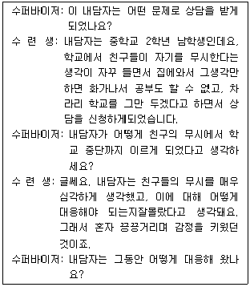
- 사례개념화 조력
- 변화개입의 재구성
- 선호하는 상담이론 탐색
- 수련생과 내담자의 경계문제 해결
- 내담자 이해를 위한 수련생의 감정 탐색
(정답률: 알수없음)
22. 수련의 지속 여부를 검토해야 할 문제 수련생에 해당하지 않는 것은?
- 윤리강령을 숙지하기 전에 내담자의 허락없이 수퍼비전을 받았다.
- 수련생의 문제가 훈련과정을 통해 변화될 수 없는 개인적 주제이다.
- 부정적 영향을 주는 상담서비스를 지속적으로 제공한다.
- 수퍼비전, 피드백 등 교정 노력에도 문제 행동이 변화하지 않는다.
- 자신의 문제행동이 확인되었는데도 수련생이 이를 다루지 못한다.
(정답률: 알수없음)
23. 수퍼비전 작업동맹에 영향을 미치는 수퍼바이저의 특성이 아닌 것은?
- 효과적인 평가 수행
- 비윤리적 행동
- 자기 개방
- 치료적 동맹의 질
- 대인관계적 영향력의 사용
(정답률: 알수없음)
24. 행동주의 수퍼비전에 관한 설명으로 옳지 않은 것은?
- 수퍼비전에서 다루는 행동에는 수련생의 생각, 감정, 행위가 포함된다.
- 행동을 특질로 보지 않고, 상황적 용어로 정의한다.
- 수련생의 바람직하지 않은 행동을 학습의 결과로 본다.
- 수퍼바이저는 훈련을 전이시키는 촉진자 역할을 담당한다.
- 수련생 개인의 목표보다 수퍼비전의 일반적 목표를 강조한다.
(정답률: 알수없음)
25. 수퍼비전에서 문화적 영향을 고려하는 접근으로 옳지 않은 것은?
- 상담직의 사회정치적 특성을 인정하도록 돕는다.
- 수퍼비전을 수행하기에 앞서 다문화 훈련이 필요하다.
- 다문화 수퍼비전의 마지막 단계에서는 내담자, 수련생, 수퍼바이저, 기관에 대한 사회적 행동을 다루어야 한다.
- 법적ㆍ사회적으로 문제가 발생하지 않으면 다문화 주제는 다루지 않는다.
- 내담자의 행동을 상담자들이 공유하는 문화의 기준으로 평가하지 않도록 돕는다.
(정답률: 알수없음)
26. 수련생이 수퍼바이저를 평가하는 항목을 모두 고른 것은?
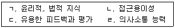
- ㄱ, ㄴ
- ㄷ, ㄹ
- ㄱ, ㄷ, ㄹ
- ㄴ, ㄷ, ㄹ
- ㄱ, ㄴ, ㄷ, ㄹ
(정답률: 알수없음)
27. 키치너(K. Kitchener)가 제시한 상담자의 주요 윤리원칙이 아닌 것은?
- 선의
- 인간존중
- 비유해성
- 공정성
- 자율성
(정답률: 알수없음)
28. 다음을 위기상황으로 보고한 수련생에게 수퍼바이저가 우선 해야 할 질문으로 적절하지 않은 것은?
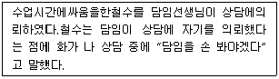
- '손 보겠다'는 말의 의미를 확인했는가?
- 지지적 환경을 만들 수 있는 방안이 있는가?
- 철수가 이전에 폭력문제에 연루된 적이 있는가?
- 다른 수업에서도 문제를 일으킨 적이 있는가?
- 어떤 윤리적, 법률적, 임상적 문제가 있는가?
(정답률: 알수없음)
29. 다음의 상담자가 준수하는 상담 목표 수립의 원칙은?
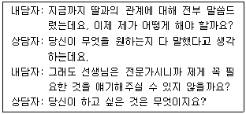
- 구체적으로 정한다.
- 현실적으로 정한다.
- 내담자가 스스로 정하게 한다.
- 목표 달성의 방해요인에 대처한다.
- 긍정적인 방향으로 정한다.
(정답률: 알수없음)
30. 집단수퍼비전의 한계를 모두 고른 것은?
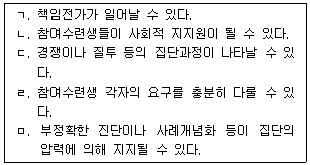
- ㄱ, ㄷ
- ㄴ, ㄹ
- ㄱ, ㄷ, ㅁ
- ㄴ, ㄷ, ㄹ
- ㄷ, ㄹ, ㅁ
(정답률: 알수없음)
2과목: 청소년 관련 법과 행정
31. 청소년복지 지원법령상 청소년복지시설에 해당하는 것을 모두 고른 것은?
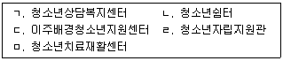
- ㄱ, ㄴ
- ㄱ, ㄷ, ㄹ
- ㄴ, ㄹ, ㅁ
- ㄴ, ㄷ, ㄹ, ㅁ
- ㄱ, ㄴ, ㄷ, ㄹ, ㅁ
(정답률: 알수없음)
32. 청소년쉼터에 관한 설명으로 옳은 것은?
- 중장기쉼터는 3년 이내 중장기보호를 할 수 있으며 필요시 1년 단위로 연장 가능하다.
- 청소년쉼터에는 일시쉼터, 단기쉼터, 드롭인센터로 불리는 중장기쉼터가 있다.
- 일시쉼터는 24시간 이내 일시보호를 할 수 있으며 최장 5일까지 연장 가능하다.
- 단기쉼터는 3개월 이내 단기보호를 할 수 있으며 최장 6개월까지 연장 가능하다.
- 청소년복지지원법상 가출청소년이 가정ㆍ학교ㆍ사회로 복귀해 생활할 수 있도록 지원하는 청소년복지지원기관이다.
(정답률: 알수없음)
33. 청소년 기본법령상 청소년상담사에 관한 설명으로 옳은 것을 모두 고른 것은?
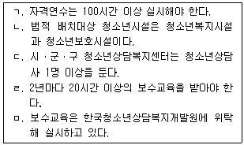
- ㄱ, ㄴ, ㅁ
- ㄱ, ㄷ, ㅁ
- ㄴ, ㄷ, ㄹ
- ㄱ, ㄴ, ㄷ, ㅁ
- ㄱ, ㄴ, ㄷ, ㄹ, ㅁ
(정답률: 알수없음)
34. 청소년 기본법에 의해 청소년에 대한 책임이 명시적으로 규정된 것은?
- 가정, 학교, 국가
- 학교, 지방자치단체, 국가
- 가정, 사회, 지방자치단체, 국가
- 학교, 사회, 지방자치단체, 국가
- 가정, 학교, 지방자치단체, 국가
(정답률: 알수없음)
35. 청소년 기본법령상 청소년육성기금을 위탁 관리ㆍ운용할 수 없는 기관은?
- 한국청소년단체협의회
- 한국청소년활동진흥원
- 한국청소년상담복지개발원
- 한국청소년정책연구원
- 서울올림픽기념국민체육진흥공단
(정답률: 알수없음)
36. 학교 밖 청소년 지원에 관한 법률상 '학교 밖 청소년'에 해당하지 않는 것은?
- 중학교 입학 후 3개월 결석한 13세 명규
- 질병으로 초등학교 취학 의무를 유예한 10세 연일
- 고등학교에서 퇴학처분을 받은 18세 민기
- 고등학교 입학 후 30일 결석한 16세 자영
- 중학교 졸업 후 고등학교에 진학하지 않은 17세 서진
(정답률: 알수없음)
37. 설치 근거법령이 같은 기구 및 기관을 모두 고른 것은?
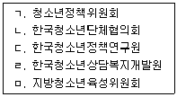
- ㄱ, ㄴ
- ㄷ, ㄹ
- ㄱ, ㄴ, ㅁ
- ㄴ, ㄹ, ㅁ
- ㄱ, ㄴ, ㄷ, ㄹ, ㅁ
(정답률: 알수없음)
38. 정책의 3대 구성요소는?
- 정책목표, 정책수단, 정책대상집단
- 정책비전, 정책목표, 정책수단
- 정책결정, 정책집행, 정책평가
- 정책목표, 정책대상집단, 정책평가
- 정책비전, 정책수단, 정책대상집단
(정답률: 알수없음)
39. 청소년복지 지원법령상 교육적 선도 신청을 받으면 기본적인 조사ㆍ상담을 실시하고, 선도필요가 인정되면 전문적인 조사ㆍ상담을 실시한다. 각각의 조사ㆍ상담 대상이 맞게 짝지어진 것은? (순서대로 기본적인 조사ㆍ상담, 전문적인 조사ㆍ상담)
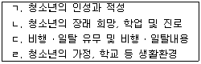
- ㄱ, ㄴ
- ㄷ, ㄹ
- (ㄱ, ㄷ), (ㄴ, ㄹ)
- (ㄱ, ㄹ), (ㄴ, ㄷ)
- (ㄷ, ㄹ), (ㄱ, ㄴ)
(정답률: 알수없음)
40. 다음 ( )에 들어갈 연령은?
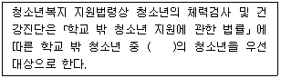
- 만 19세 미만
- 9세 이상 18세 이하
- 9세 이상 24세 이하
- 12세 이상 18세 이하
- 12세 이상 24세 이하
(정답률: 알수없음)
41. 청소년복지 지원법령상 교육적 선도에 관한 설명으로 옳은 것은?
- 신청자격은 청소년 본인과 해당 청소년 보호자로 제한한다.
- 신청 시에는 시ㆍ도지사에게 교육적 선도 지원신청서를 제출해야 한다.
- 선도기간은 1년 이내로 하되, 청소년 본인과 보호자의 동의를 받으면 6개월 범위에서 한 번 연장할 수 있다.
- 선도후견인은 청소년기본법에 따른 청소년지도자와 청소년지도위원 중에서 지정한다.
- 선도후견인은 선도대상 청소년을 상담하고 선도 기간을 결정할 수 있다.
(정답률: 알수없음)
42. 청소년동반자 사례배정시 우선적용 대상에 해당하는 청소년을 모두 고른 것은?
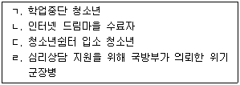
- ㄱ
- ㄱ, ㄷ
- ㄱ, ㄴ, ㄷ
- ㄴ, ㄷ, ㄹ
- ㄱ, ㄴ, ㄷ, ㄹ
(정답률: 알수없음)
43. 소년법상 보호처분에 관한 설명으로 옳은 것은?
- 10세 아동에게는 수강명령 처분을 할 수 없다.
- 11세 아동에게 장기 소년원 송치 처분을 할 수 있다.
- 15세 아동에게 300시간의 사회봉사명령을 할 수 있다.
- 보호관찰관이 보호처분 명령을 집행할 때에는 사건 본인의 정상적인 생활을 방해할 수 있다.
- 단기로 소년원에 송치된 소년의 보호기간은 1년까지 지정될 수 있다.
(정답률: 알수없음)
44. 청소년복지 지원법령상 위기청소년 특별지원에 관한 설명으로 옳지 않은 것은?
- 위기청소년이란 가정문제나 학업수행 또는 사회적응에 어려움을 겪는 등 조화롭고 건강한 성장과 생활에 필요한 여건을 갖추지 못한 청소년이다.
- 국가 및 지방자치단체는 위기청소년 가족 및 보호자에 대한 상담 및 교육을 실시할 수 있다.
- 특별지원에는 생활ㆍ학업ㆍ의료ㆍ직업훈련ㆍ청소년활동 지원 등이 있다.
- 지방자치단체 청소년업무 담당공무원은 특별지원을 신청할 수 있으며 이때 해당 청소년의 동의를 받아야 한다.
- 시ㆍ도지사는 특별지원을 받고 있거나 받은 청소년에 대해 위기청소년 특별지원 관리카드를 작성ㆍ관리해야 한다.
(정답률: 알수없음)
45. 청소년 보호법령을 위반한 인터넷게임 제공자의 행위는?
- 15세 청소년의 인터넷게임 이용시간을 부모에게 알린다.
- 16세 청소년이 사용하는 인터넷게임의 등급을 부모에게 알리지 않는다.
- 17세 청소년이 사용하는 인터넷게임의 특성을 부모에게 알리지 않는다.
- 15세 청소년에게 오전 0시에 인터넷게임을 제공한다.
- 16세 청소년에게 오전 1시에 인터넷게임을 제공한다.
(정답률: 알수없음)
46. 학교폭력예방 및 대책에 관한 법률상 학교폭력과 관련하여 교육감이 할 수 있는 일을모두 고른 것은?
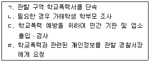
- ㄱ, ㄴ
- ㄱ, ㄷ
- ㄱ, ㄴ, ㄷ
- ㄴ, ㄷ, ㄹ
- ㄱ, ㄴ, ㄷ, ㄹ
(정답률: 알수없음)
47. 청소년 보호법령상 청소년유해매체물 판매시 상대방의 나이 및 본인 여부를 확인하는 방법이 아닌 것은?
- 대면을 통한 신분증 확인
- 팩스로 수신한 신분증 사본 확인
- 신용카드를 통한 인증
- 휴대전화를 통한 인증
- 보호자의 자녀 연령 확인서
(정답률: 알수없음)
48. 청소년복지 지원법령상 청소년상담복지센터의 설치기준으로 옳지 않은 것은?
- 사무실, 상담대기실, 집단상담 및 심리검사실, 전화 등 상담실을 각각 1개 이상 갖춰야 한다.
- 청소년 및 보호자 등을 교육할 교육실을 1개 이상 갖춰야 한다.
- 개인상담실은 시ㆍ도 청소년상담복지센터의 경우 5개 이상, 시ㆍ군ㆍ구의 경우 3개소 이상 갖춰야 한다.
- 시ㆍ도 및 시ㆍ군ㆍ구 청소년상담복지센터는 남녀 각각 별도로 일시보호소를 갖춰야 한다.
- 시ㆍ도 청소년상담복지센터는 연면적 400m2이상 독립된 공간을 갖춰야 한다.
(정답률: 알수없음)
49. 청소년복지 지원법령에 규정된 사항을 모두 고른 것은?
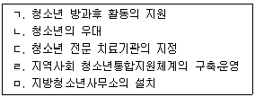
- ㄱ, ㄷ
- ㄴ, ㄹ
- ㄴ, ㄷ, ㄹ
- ㄴ, ㄷ, ㄹ, ㅁ
- ㄱ, ㄴ, ㄷ, ㄹ, ㅁ
(정답률: 알수없음)
50. 아동ㆍ청소년의 성보호에 관한 법률상 아동ㆍ청소년대상 성범죄 신고 의무 기관으로 규정되지 않은 것은?
- 의료기관
- 어린이집
- 종교시설
- 아동복지시설
- 청소년활동시설
(정답률: 알수없음)
51. 청소년활동 진흥법령상 청소년수련시설에 해당하는 것을 모두 고른 것은?
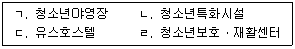
- ㄱ, ㄴ
- ㄱ, ㄷ
- ㄱ, ㄴ, ㄷ
- ㄴ, ㄷ, ㄹ
- ㄱ, ㄴ, ㄷ, ㄹ
(정답률: 알수없음)
52. 청소년활동 진흥법령상 청소년수련활동의 인증에 관한 사항으로 옳지 않은 것은?
- 참가인원이 150명 이상인 청소년수련활동은 인증을 받아야 한다.
- 인증위원회는 한국청소년활동진흥원에 설치한다.
- 청소년지도자가 여성가족부령으로 정하는 응급처치에 관한 교육을 이수하였어도 별도의 안전관련 전문인력을 갖추어야 인증을 신청할 수 있다.
- 인증의 유효기간은 인증위원회에서 설정한다.
- 인증을 받은 후 정당한 사유 없이 1년 이상 계속하여 인증수련활동을 실시하지 아니할 경우 인증이 취소될 수 있다.
(정답률: 알수없음)
53. 학교폭력예방 및 대책에 관한 법률상 학교폭력대책자치위원회의 조직 및 운영에 관한 설명으로 옳지 않은 것은?
- 전체위원회의 3분의 1을 학부모전체회의에서 직접 선출된 학부모대표로 위촉
- 학교의 장에게 피해학생에 대하여 일시보호와 학급교체를 병과하여 요청
- 학교의 장에게 학교폭력피해 장애학생의 보호를 위하여 장애인전문 상담가의 상담을 요청
- 가해학생이 중학생인 경우 퇴학처분을 요청하지 않음
- 전문상담교사에게 학교폭력과 관련된 피해학생과의 상담결과를 요청
(정답률: 알수없음)
54. 청소년상담복지센터의 사업에 관한 설명으로 옳지 않은 것은?
- 지역사회 청소년통합지원체제의 필수연계기관에는 1388청소년지원단이 포함된다.
- 보건소는 지역사회 청소년통합지원체제의 필수연계기관이다.
- 시ㆍ도 청소년상담복지센터는 청소년전화 1388을 24시간, 365일 운영해야 한다.
- 시ㆍ군ㆍ구 청소년상담복지센터는 학교폭력 원스톱지원센터로 지정된다.
- 1388청소년지원단의 하부지원단은 '발견ㆍ구조', '의료ㆍ법률', '복지', '상담ㆍ멘토지원'으로 표준화되어 있다.
(정답률: 알수없음)
55. 다음 중 적용대상 청소년의 연령이 같은 법령끼리 짝지어진 것은?
- 청소년 기본법 - 청소년 보호법
- 청소년 기본법 - 학교폭력예방 및 대책에 관한 법률
- 청소년복지 지원법 - 학교폭력예방 및 대책에 관한 법률
- 청소년복지 지원법 - 학교 밖 청소년 지원에 관한 법률
- 학교폭력예방 및 대책에 관한 법률 - 학교 밖 청소년 지원에 관한 법률
(정답률: 알수없음)
56. 청소년 정책의 역사에 관한 설명으로 옳지 않은 것은?
- 1991년: 청소년 기본법 제정
- 2004년: 청소년 보호법, 청소년복지 지원법 제정
- 2006년: 위기청소년 사회안전망 구축사업을 5개 시ㆍ도에서 시범운영
- 2012년: 한국청소년상담원이 한국청소년상담복지개발원으로 명칭변경
- 2016년 현재: 청소년상담복지업무 주관부서는 여성가족부 청소년자립지원과
(정답률: 알수없음)
57. 아동ㆍ청소년의 성보호에 관한 법률상 청소년상담복지센터에 지정된 업무가 아닌 것은?
- 아동ㆍ청소년대상 성범죄 신고의 접수 및 상담
- 대상아동ㆍ청소년의 보호ㆍ자립지원
- 대상아동ㆍ청소년과 병원 연계
- 아동ㆍ청소년 성매매 등과 관련한 조사ㆍ연구
- 지역 내 성범죄 가해자 신상정보 수집
(정답률: 알수없음)
58. 청소년복지 지원법령상 시ㆍ도 청소년상담복지센터 종사자 자격기준으로 옳은 것은?
- 센터의 장: 상담복지분야 박사학위를 취득하거나 박사과정을 이수한 자로 관련 실무경력 1년 이상인 사람
- 관리업무 수행직원: 청소년상담사 2급
- 행정업무 수행직원: 고등학교를 졸업하고 해당 업무를 수행할 수 있다고 시ㆍ도지사가 인정하는 사람
- 청소년대상 실무업무 수행직원: 청소년상담사 3급, 청소년지도사 2급 또는 사회복지사 2급 이상이며 관련 실무경력 2년 이상인 사람
- 생활지도 직원: 청소년상담사, 청소년지도사 또는 사회복지사로서 관련 실무경력이 6개월 이상인 사람
(정답률: 알수없음)
59. 청소년상담복지센터 종사자 교육 운영에 관한 설명으로 옳지 않은 것은?
- 직원의 전문성 향상을 위한 업무관련 교육 의무시수에는 수퍼비전 시간이 포함된다.
- 직원의 전문성 향상을 위한 업무관련 교육에는 시ㆍ도센터 주관 직무연수 및 전문지도자 양성교육, 이러닝 연수 등이 포함된다.
- 신규종사자는 채용일로부터 3개월 이내에 업무관련 교육을 8시간 이상 수료해야 한다.
- 소속 종사자를 대상으로 안전교육 등 지정된 내용의 교육을 연 3시간 이상 실시해야 한다.
- 청소년상담사 자격증 소지 종사자 보수교육 대상자 명단을 매년 12월 31일까지 한국청소년상담복지개발원 청소년상담사 홈페이지에 등록해야 한다.
(정답률: 알수없음)
60. 청소년 보호법령상 청소년유해매체물을 방송할 수 있는 시간은?
- 평일 오전 8시
- 평일 오후 11시
- 토요일 오전 7시
- 공휴일 오전 10시
- 방학기간 오후 9시
(정답률: 알수없음)
3과목: 상담연구방법론의 실제
61. 두 프로그램의 상대적 효과를 검증할 때 연구대상의 성별에 따른 효과 차이를 통제하는 방법은?
- 일원분산분석을 실시한다.
- 연구대상을 여성 또는 남성으로 제한한다.
- 실험집단에는 여성만을 할당하고 통제집단에는 남성만을 할당한다.
- 연령이 비슷한 사람들끼리 짝을 지어 실험집단과 통제집단에 할당한다.
- 실험집단에는 여성을 많이 할당하고, 통제집단에는 남성을 많이 할당한다.
(정답률: 알수없음)
62. 교차지연패널 상관 절차로 연구하여 '작업동맹(w)'이 상담회기 '깊이(d)'의 원인이 될 것으로 결론 내렸다. 이 결론을 지지하는 변인간의 관계를 옳게 표현한 것은? (단, 1회기의 깊이와 작업동맹은 각각 d1, w1, 4회기의 경우는 d4, w4로 하며, 2회기와 3회기는 측정하지 않음)
- rd1d4 ＞ rw1w4(통계적으로 유의함)
- rw1d4 ＞ rd1w4(통계적으로 유의함)
- rd1w4 ＞ rw1d4(통계적으로 유의함)
- rd1w1 ＞ rd4w4(통계적으로 유의함)
- rd1w1 = rw1d4(통계적으로 유의하지 않음)
(정답률: 알수없음)
63. 연구 참여 동의서에 관한 설명으로 옳지 않은 것은?
- 통제집단에 할당된 것이 알려지면 연구결과에 영향을 줄 수 있으므로 통제집단의 경우 동의를 구하지 말아야 한다.
- 공개된 상황에서의 행동관찰(observation of public behavior) 대상이 되는 경우 동의서를 생략할 수 있다.
- 연구가 참여자에게 해를 초래할 수 있다고 예상되면 동의서를 반드시 받아야 한다.
- 무기명의 기록자료(archival data)를 이용하는 경우 동의서를 생략할 수 있다.
- 미성년자인 경우 부모의 동의를 꼭 받아야 하고, 미성년자에게도 최대한 이해할 수 있도록 설명하여 동의를 구하는 것이 좋다.
(정답률: 알수없음)
64. 근거이론 연구에 적용하는 '연구의 경험적 근거' 평가기준을 모두 고른 것은?
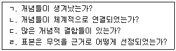
- ㄱ
- ㄹ
- ㄱ, ㄴ, ㄷ
- ㄴ, ㄷ, ㄹ
- ㄱ, ㄴ, ㄷ, ㄹ
(정답률: 알수없음)
65. 다음 가설을 검증할 때, 기대되는 결과로 옳은 것은?
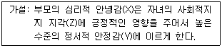
- Y를 준거변인으로 하고 X를 예언변인으로 한 회귀분석 결과, X의 회귀계수는 0일 것이다.
- X와 Z를 예언변인으로 한 회귀분석 결과, Z의 회귀계수는 유의한 양(+)의 값을 가질 것이다.
- X와 Z를 예언변인으로 한 회귀분석 결과, X의 회귀계수는 유의한 음(-)의 값을 가질 것이다.
- X를 예언변인으로 하고 Z를 준거변인으로 한 회귀분석 결과, X의 회귀계수는 0일 것이다.
- X와 Z를 예언변인으로 한 회귀분석 결과, Z의 회귀계수는 0일 것이다.
(정답률: 알수없음)
66. 상관연구 설계에서 활용할 수 있는 분석 방법으로 옳지 않은 것은?
- 단순상관
- 중다회귀
- 구조방정식 모델링
- 위계적 선형 모델링
- 콜모고로프-스미르노프(Kolmogorov-Smirnov) 검증
(정답률: 알수없음)
67. 집단 간의 차이를 검증하는 방법에 관한 설명으로 옳은 것은?
- 맨-휘트니(Mann-Whitney) 검증은 모든 사례의 순위를 고려하므로 중앙값 검증보다 더 높은 검증력을 지닌다.
- χ2검증은 종속변수가 연속변수일 때 사용한다.
- χ2검증은 F검증에 비해 정밀성이 높고 오류가능성이 낮다.
- 크러스칼-왈리스(Kruskal-Wallis) 검증은 비연속적 변수를 적용한 대표적인 단일집단 검증이다.
- 일원 χ2검증은 독립변수 집단 간에 종속변수 범주 간 분포 차이를 검증하는 것이다.
(정답률: 알수없음)
68. 다음은 동년배(cohort) 설계의 한 유형을 다이어그램으로 나타낸 것이다. 이 설계에 관한 설명으로 옳지 않은 것은?
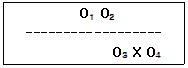
- 처치 전-후 동년배 설계라 한다.
- 두 집단이 처치 전에 동일한 지를 확인할 수 있다.
- 사전검사가 외적 타당도에 대한 위협으로 기능할 수 있다.
- 사전검사를 공변인으로 활용하여 더 강력한 검증을 할 수 있다.
- 처치효과가 있다면 |O1-O2|와 |O3-O4|의 차이가 통계적으로 유의하지 않다.
(정답률: 알수없음)
69. 두 잠재변인 A와 B를 측정하는 도구인 X와 Y의 상관(rXY)은 0.4이고, X의 신뢰도와 Y의 신뢰도는 모두 0.4이다. 이 때 두 잠재변인 간 상관(rAB)에 관한 설명으로 옳은 것은?
- rAB = 0 이다.
- rAB ＜ rXY 이다.
- rAB = rXY 이다.
- rAB ＞ rXY 이다.
- rAB ≤ rXY 이다.
(정답률: 알수없음)
70. 절대 영점을 갖는 비율변수는?
- 지능
- 연도
- 온도
- 무게
- 색상
(정답률: 알수없음)
71. 호손(Hawthorne) 효과에 관한 설명으로 옳지 않은 것은?
- 미국 전기회사에서 실시한 연구에서 유래되었다.
- 생태학적 타당도를 위협한다.
- 연구대상이 연구목적을 알고 다르게 행동하여 실험 결과에 영향을 준다.
- 실험 연구의 타당도를 저해한다.
- 플라시보(placebo) 효과를 통해 강화된다.
(정답률: 알수없음)
72. 분산치에 관한 설명으로 옳은 것을 모두 고른 것은?
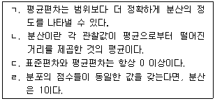
- ㄱ
- ㄴ
- ㄱ, ㄴ
- ㄴ, ㄷ, ㄹ
- ㄱ, ㄴ, ㄷ, ㄹ
(정답률: 알수없음)
73. 척도의 구성에 관한 설명으로 옳은 것은?
- 써스톤(Thurstone) 유사동간법은 평정자가 진술문 간의 동간성을 판단할 수 있다는 것을 전제로 한다.
- 리커트(Likert) 총합평정법은 개별문항을 서열화하여 그 결과를 누적하는 것이다.
- 거트만(Guttman) 척도분석법은 개별문항에 동일한 가중치를 부여하여 합산한 뒤 그 결과를 서열화하는 것이다.
- 의미분석법은 문항 간 위계를 통하여 사물, 사건에 대한 의미를 측정하는 방법이다.
- 거트만(Guttman) 척도분석법은 양극의 뜻을 갖고 대비되는 형용사들로 의미를 측정하는 방법이다.
(정답률: 알수없음)
74. 상담연구의 목적으로 옳은 것을 모두 고른 것은?
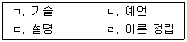
- ㄱ, ㄴ
- ㄴ, ㄷ
- ㄱ, ㄴ, ㄷ
- ㄴ, ㄷ, ㄹ
- ㄱ, ㄴ, ㄷ, ㄹ
(정답률: 알수없음)
75. 모의상담연구의 장점이 아닌 것은?
- 독립변수의 조작이 용이하다.
- 내적 타당도를 높일 수 있다.
- 외적 타당도를 높일 수 있다.
- 윤리적 문제의 가능성을 줄일 수 있다.
- 가외변수의 영향을 통제할 수 있다.
(정답률: 알수없음)
76. 다음에 해당하는 질적 연구방법은?
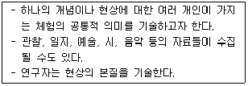
- 현상학적 접근
- 근거이론
- 내러티브연구
- 사례연구
- 문화기술지연구
(정답률: 알수없음)
77. 정규분포에 관한 설명으로 옳은 것을 모두 고른 것은?
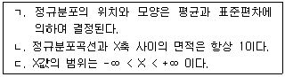
- ㄱ
- ㄴ
- ㄱ, ㄴ
- ㄱ, ㄷ
- ㄱ, ㄴ, ㄷ
(정답률: 알수없음)
78. 서로 다른 상담방법의 성과를 비교하는 연구에서 처치의 충실성(treatment integrity) 확보를 위한 방법을 모두 고른 것은?
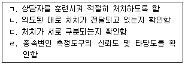
- ㄱ, ㄴ
- ㄴ, ㄷ
- ㄱ, ㄴ, ㄷ
- ㄱ, ㄷ, ㄹ
- ㄱ, ㄴ, ㄷ, ㄹ
(정답률: 알수없음)
79. 만 4세 남아의 반항행동, 과제이탈행동, 우는 행동에 대한 하나의 중재 효과를 평가하기 위해 각 행동의 기초선 기간을 달리하는 설계를 선택하였다. 이 설계의 특징을 모두 고른 것은?
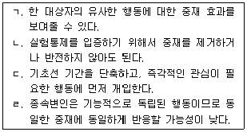
- ㄱ
- ㄷ
- ㄱ, ㄴ
- ㄷ, ㄹ
- ㄱ, ㄴ, ㄹ
(정답률: 알수없음)
80. 스트레스 대처를 위한 네 가지 상담프로그램의 효과를 비교한 무선배치 분산분석 결과이다. 집단마다 피험자를 5명씩 할당했을 때 (ㅁ)+(ㅂ)의 값은?
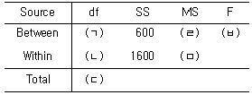
- 51
- 52
- 101
- 102
- 201
(정답률: 알수없음)
81. 실험연구에서 변수 간 인과관계 추론의 가능성을 낮추는 요인을 모두 고른 것은?
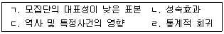
- ㄱ, ㄴ
- ㄴ, ㄷ
- ㄴ, ㄹ
- ㄱ, ㄷ, ㄹ
- ㄴ, ㄷ, ㄹ
(정답률: 알수없음)
82. 영가설을 기각할 가능성이 높은 상황을 모두 고른 것은?
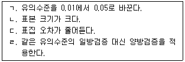
- ㄱ
- ㄱ, ㄴ
- ㄱ, ㄴ, ㄷ
- ㄴ, ㄷ, ㄹ
- ㄱ, ㄴ, ㄷ, ㄹ
(정답률: 알수없음)
83. 다음 절차에 해당하는 설계방법은?
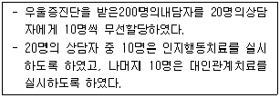
- 배속설계(nested design)
- 솔로몬 4집단설계
- 교차설계(crossed design)
- 혼합설계(mixed design)
- 균형설계(counterbalanced design)
(정답률: 알수없음)
84. 다음의 절차가 설명하는 것은?
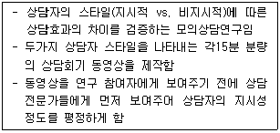
- 상담자 역량의 동등성 검증
- 조작검증(manipulation check)
- 상담자의 이론적 지향성 확인
- 연구자의 기대가 미치는 영향 검증
- 혼재변인(confound)이 미치는 영향의 정도 추정
(정답률: 알수없음)
85. ABA 가역설계(reversal design)에 관한 설명으로 옳은 것은?
- 첫 번째 A는 처치 기간을 나타낸다.
- B는 기초선 기간을 나타낸다.
- B에서 안정된 '반치료적(countertherapeutic) 경향'을 보인 후 두 번째 A 기간이 시작된다.
- 중재 조건에서 '정도 및 경향의 수용할 만한 안정세'를 보인 후에 중재를 제거한다.
- 다른 대상자에게 동일한 결과가 발생할 경우, 내적 타당도가 저하된다.
(정답률: 알수없음)
86. 다른 측정치와의 공통성 정도를 기반으로 판단하는 검사 타당도에 해당하는 것은?
- 논리적 타당도
- 예언타당도
- 구인타당도
- 안면타당도
- 내용타당도
(정답률: 알수없음)
87. 연구 가설에 관한 설명으로 옳지 않은 것은?
- 복잡성을 높여 논리성을 지녀야 한다.
- 검증 가능해야 한다.
- 이론적으로 명료해야 한다.
- 연구자가 내세우는 잠정적인 진술이다.
- 연구 목적을 반영한다.
(정답률: 알수없음)
88. 초등용 적성검사의 점수가 각 학년 별로 정규분포를 이룬다고 가정할 때, 이 검사 결과에서 4학년 평균점수보다 낮은 3학년 학생의 수는?
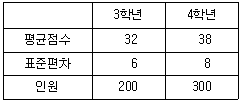
- 116
- 150
- 154
- 168
- 254
(정답률: 알수없음)
89. 목적표집(purposeful sampling)에 관한 설명으로 옳은 것을 모두 고른 것은?
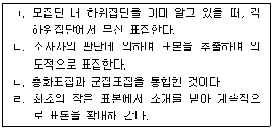
- ㄱ
- ㄴ
- ㄱ, ㄴ
- ㄴ, ㄹ
- ㄱ, ㄴ, ㄹ
(정답률: 알수없음)
90. 크론바흐(Cronbach) α계수에 관한 설명으로 옳지 않은 것은?
- 이분문항이면 K-R 20 신뢰도 계수와 같다.
- 한 검사를 한 집단에서 실시하여 획득할 수 있는 신뢰도 계수이다.
- 일반화된 문항내적합치도 계수이다.
- 스피어만-브라운(Spearman-Brown) 공식으로 계수를 교정할 수 있다.
- 급내 상관계수로 표현된다.
(정답률: 알수없음)